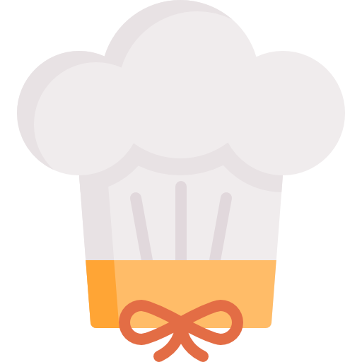

<ion-app>
  <ion-menu side="start" menuId="m1" style="background-color: rgb(0, 0, 0, 0.5)">
    <ion-header class="ion-no-border">
      <ion-toolbar class="bg-warning" color="warning">
        <ion-title class="text-white" style="letter-spacing: 3px">
          <!--  -->
          Recipely
        </ion-title>
      </ion-toolbar>
    </ion-header>
    <ion-content>
      <ion-list>
        <ion-menu-toggle menu="m1">
          <ion-item lines="none" routerLink="/recipes">
            <ion-icon name="list-outline" slot="start"></ion-icon>
            <ion-label>Recipes List</ion-label>
          </ion-item>
          <ion-item lines="none" routerLink="/recipes/favourite">
            <ion-icon name="bookmark" slot="start"></ion-icon>
            <ion-label>Favourite</ion-label>
          </ion-item>
          <ion-item lines="none" routerLink="/recipes">
            <ion-icon name="settings-outline" slot="start"></ion-icon>
            <ion-label>Settings</ion-label>
          </ion-item>
          <ion-item lines="none" routerLink="/recipes">
            <ion-icon name="help-circle-outline" slot="start"></ion-icon>
            <ion-label>Help</ion-label>
          </ion-item>
        </ion-menu-toggle>
      </ion-list>
    </ion-content>
  </ion-menu>

  <ion-router-outlet main></ion-router-outlet>
</ion-app>